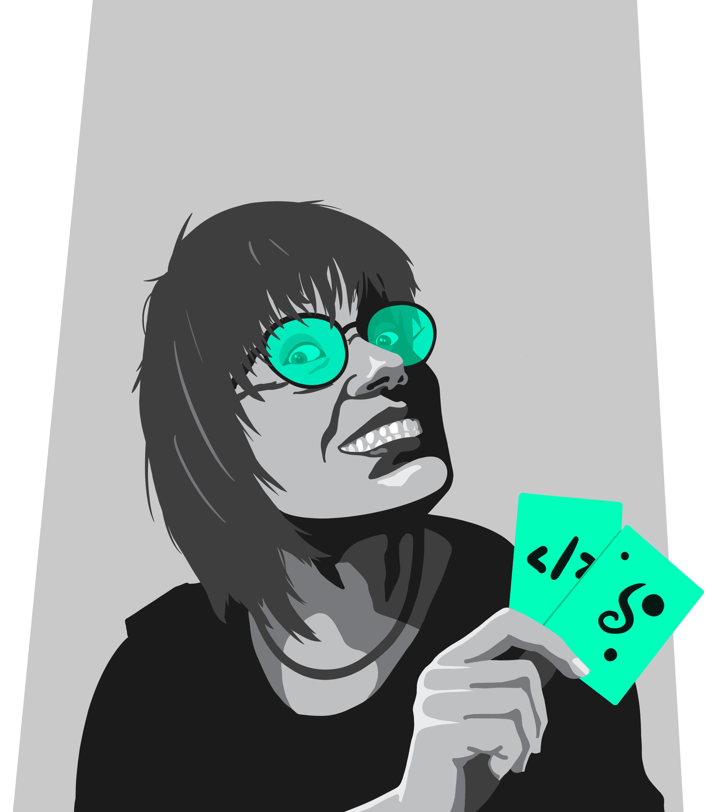
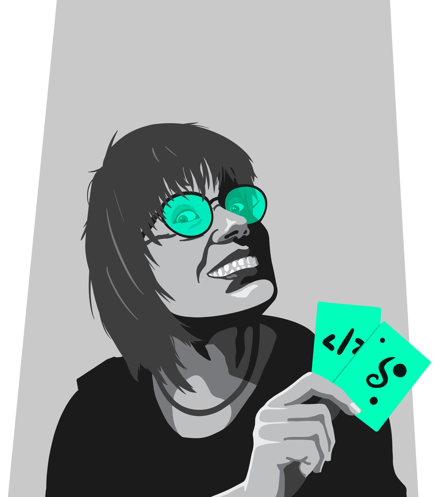

Hej! Mitt namn är Helena, jag lär mig webbutveckling och design så att jag kan vara med och göra världen till en bättre plats.
 

Vad jag kan nu
Jag lär mig grunderna inom webbutveckling genom The Odin Project. Jag har hittills lärt mig HTML och CSS, och hemsidan du är på är mitt första projekt. Jag har en Windowsdator med WSL (Windows Subsystem for Linux), och kodar i VS-Code. Jag använder Git och pushar min kod till GitHub.
Relaterade färdigheter
Jag är även intresserad av design och använder mig av olika program och appar för att skapa designer och designelement. Några av dem är: Adobe XD, Inkscape, Photoshop och Procreate. Loggan uppe till vänster är gjord i Adobe XD och bilden på mig vid headern har jag gjort i Procreate.
Nästa steg och framtiden
Nu går jag vidare för att lära mig Javascript. Längre fram vill jag lära mig ramverk som Bootstrap och React, och även något språk för backend, kanske Node.js. Efter det kan jag tänka mig att lära mig fler ramverk och språk beroende på omständigheterna. Jag är också intresserad av att lära mig mer om bildskapande, inkluderande design och om tillgänglighet på nätet.
Drömmen
Drömmen är att arbeta med frontend då jag är intresserad av det som händer mellan gränssnitt och användare. På fritiden vill jag göra webbappar som underlättar för folk med t ex neuropsykiatriska diagnoser. Jag har en idé till en att-göra-app som jag själv velat ha väldigt länge, och jag funderar på hur man kan göra en webbapp där användare själva kan sätta ihop bilder för att använda som bilder-som-stöd, istället för en bildbank med färdiga bilder.